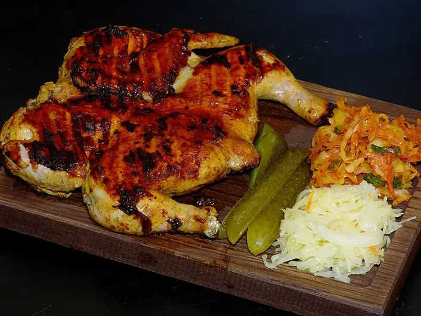

Фото: Pannet, CC BY-SA 4.0

Цыплёнок табака
Распластанный цыплёнок, зажаренный под гнётом до хрустящей корочки, с чесночным соусом
75 мин2 порц.893 ккал на порциюБ 65 · Ж 68 · У 4Кавказская кухня
Продукты на 2 порц.
- Курица целая1 шт
- Сливочное масло30 г
- Чеснок5 зуб.
- Вода3 ст. л.
- Соль1,5 ч. л.
- Перец чёрный молотый0,5 ч. л.
- Кинза по желаниюпо вкусу
Как готовить
- Разрежьте цыплёнка вдоль грудки и раскройте как книжку. Накройте плёнкой и слегка отбейте, чтобы он лёг ровно.
- Натрите солью и перцем со всех сторон и оставьте на 30 минут.
- Растопите масло в тяжёлой сковороде на среднем огне. Положите цыплёнка кожей вниз, сверху крышку меньшего размера и груз: кастрюлю с водой.
- Жарьте 15 минут до тёмно-золотой корочки. Переверните, снова придавите и жарьте ещё 15 минут.
- Проколите ножом бедро у кости: если сок прозрачный, цыплёнок готов. Если розовый, жарьте ещё 5 минут.
- Для соуса разотрите чеснок с щепоткой соли и разведите тёплой кипячёной водой. Полейте цыплёнка соусом или подайте отдельно с кинзой.
Совет. Берите цыплёнка до 800 г, большая курица прожарится снаружи раньше, чем внутри. Без груза корочки по всей поверхности не будет.